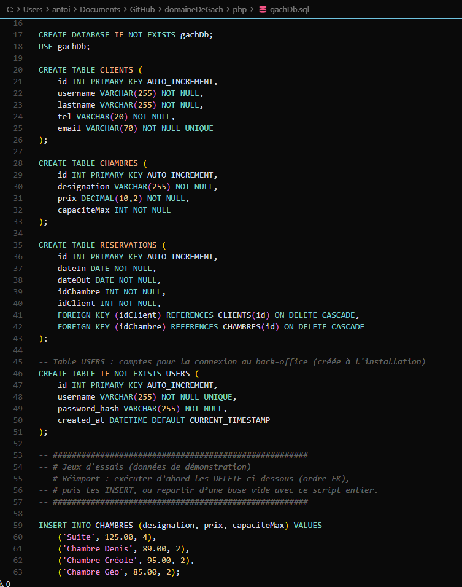
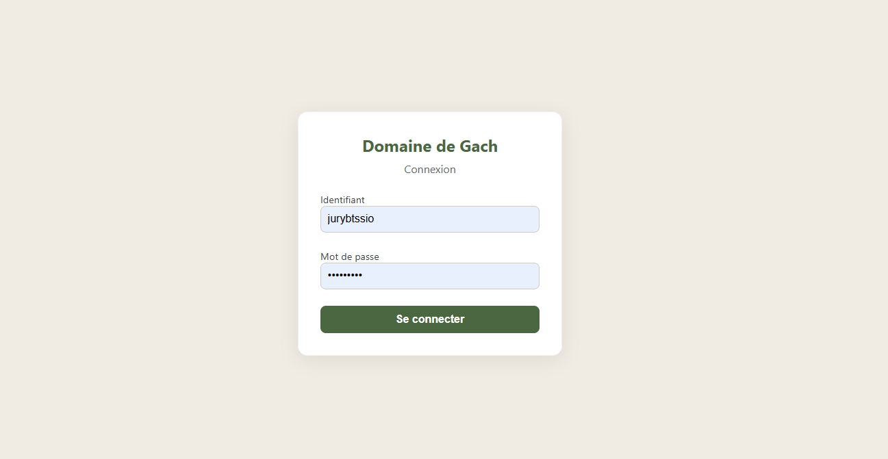

Chambres d’hôtes · Site vitrine
Domaine de Gach
Vitrine pour un domaine en Occitanie : présentation des chambres, prise de contact fluide et fondations techniques solides (SEO, données, hébergement).
01 — Contexte
Un lieu, une expérience à raconter
Le site doit transmettre l’atmosphère du domaine : pierre, vignes, calme. La structure met en avant les chambres et facilite la prise de contact sans friction.
03 — Livrables
Points techniques clés
- EmailJS Formulaire de contact sans backend lourd sur l’hébergement mutualisé.
- SQL Données métier hébergées sur VPS pour les besoins de gestion.
- SEO & IONOS Référencement de base, domaine et hébergement gérés chez IONOS.
04 — Données
Schéma SQL
Base gachDb sur VPS : clients, chambres, réservations (clés étrangères et cascades)
et comptes d’administration pour le back-office.

gachDb.sql05 — Administration
Espace de gestion
Interface d’administration pour piloter le contenu et les données liées au domaine : structure pensée pour un usage régulier, distincte de la vitrine publique.

06 — Déploiement
Sous-domaine admin
L’administration est isolée du site public (domainedegach.com/admin),
hébergée sur le VPS en complément de la vitrine IONOS.
Espace réservé à la gestion du domaine